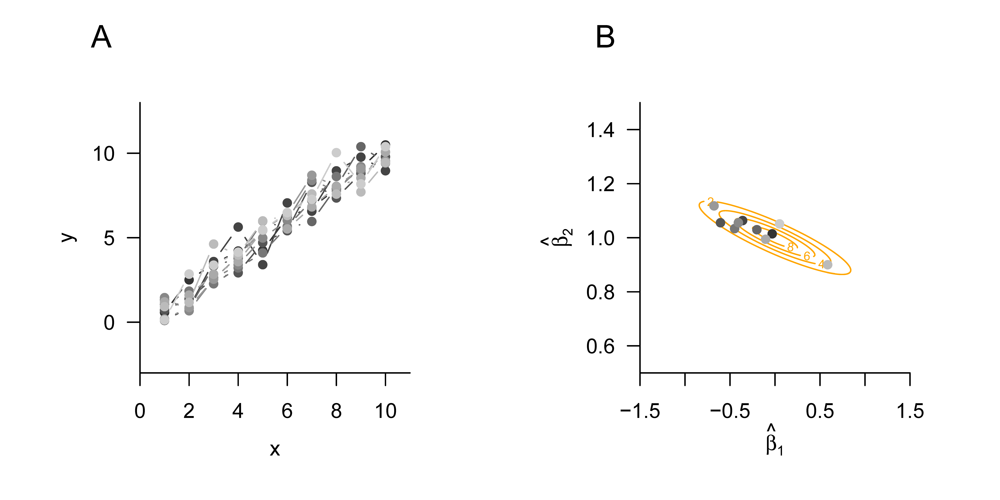

# Modellformulierung
library(MASS) # Multivariate Normalverteilung
n = 12 # Anzahl Datenpunkte
p = 1 # Anzahl Betaparameter
X = matrix(rep(1,n), nrow = n) # Designmatrix
I_n = diag(n) # n x n Einheitsmatrix
beta = 2 # wahrer, aber unbekannter, Betaparameter
sigsqr = 1 # wahrer, aber unbekannter, Varianzparameter
# Datenrealisierung
y = mvrnorm(1, X %*% beta, sigsqr*I_n) # eine Realisierung eines n-dimensionalen ZVs
# Parameterschätzung
beta_hat = solve(t(X) %*% X) %*% t(X) %*% y # Betaparameterschätzer
eps_hat = y - X %*% beta_hat # Residuenvektor
sigsqr_hat = (t(eps_hat) %*% eps_hat) /(n-p) # Varianzparameterschätzer28 Parameterschätzung
In diesem Abschnitt betrachten wir die Frequentistische Punktschätzung von Betaparametervektor und Varianzparameter im ALM. Als Beispielanwendungen betrachten wir das Szenario \(n\) unabhängig und identisch normalverteilter Zufallsvariablen und das Szenario der einfachen linearen Regression. Wir schließen mit der Dokumentation der Frequentistischen Parameterschätzerverteilungen des ALMs.
28.1 Betaparameterschätzung
Wir fassen die Frequentistische Punktschätzung des Betaparametervektors in folgendem Theorem zusammen.
Theorem 28.1 (Betaparameterschätzer) Es sei \[\begin{equation} \upsilon = X\beta+\varepsilon \mbox{ mit } \varepsilon \sim N\left(0_{n}, \sigma^{2} I_{n}\right) \end{equation}\] das Allgemeine Lineare Modell und es sei \[\begin{equation} \hat{\beta}:=\left(X^{T}X\right)^{-1}X^{T}\upsilon . \end{equation}\] Dann gelten:
\(\hat{\beta}\) ist der KQ-Schätzer von \(\beta \in \mathbb{R}^{p}\), für einen beliebigen festen Wert \(y \in \mathbb{R}^n\) von \(\upsilon\) gilt also \[\begin{equation} \hat{\beta}=\operatorname{argmin}_{\tilde{\beta}}(y - X\tilde{\beta})^{T}(y - X\tilde{\beta}) . \end{equation}\]
\(\hat{\beta}\) ist ein unverzerrter Maximum-Likelihood-Schätzer von \(\beta \in \mathbb{R}^{p}\).
Beweis. (1) Wir zeigen in einem ersten Schritt, dass \(\hat{\beta}\) ein KQ-Schätzer ist, dass also \(\hat{\beta}\) für einen beliebigen festen Wert \(y \in \mathbb{R}^n\) von \(\upsilon\) die Summe der Abweichungsquadrate \[\begin{equation} (y-X\tilde{\beta})^{T}(y-X\tilde{\beta})=\sum_{i=1}^{n}\left(\upsilon_{i}-(X \tilde{\beta})_{i}\right)^{2} \end{equation}\] minimiert (die Notation \(\tilde{\beta}\) für das Minimierungsargument dient hier lediglich dazu, es vom wahrem, aber unbekannten, Parameterwert \(\beta \in \mathbb{R}^{p}\) abzugrenzen und ist ansonsten ohne Bedeutung). Dazu halten wir zunächst fest, dass \[\begin{equation} \hat{\beta} = \left(X^{T}X\right)^{-1}X^{T}y \Leftrightarrow X^{T}X\hat{\beta} = X^{T}y \Leftrightarrow X^{T}y-X^{T}X\hat{\beta} = 0_{p} \Leftrightarrow X^{T}(y-X\hat{\beta})=0_{p}. \end{equation}\] Weiterhin gilt dann auch, dass \[\begin{equation} X^{T}(y-X\hat{\beta})=0_{p} \Leftrightarrow \left(X^{T}(y-X\hat{\beta})\right)^{T}=0_{p}^{T} \Leftrightarrow (y-X\hat{\beta})^{T} X=0_{p}^{T} \end{equation}\] Weiterhin halten wir ohne Beweis fest, dass für jede Matrix \(X \in \mathbb{R}^{n \times p}\) gilt, dass \[\begin{equation} z^{T}X^{T}Xz \geq 0 \mbox{ für alle } z \in \mathbb{R}^{p}. \end{equation}\] Wir betrachten nun für festes \(y\) und ein beliebiges \(\tilde{\beta}\) die Summe der Abweichungsquadrate \[\begin{equation} (y-X\tilde{\beta})^{T}(y-X\tilde{\beta}) \end{equation}\] Es ergibt sich \[\begin{equation} \begin{aligned} & (y-X\tilde{\beta})^{T}(y-X\tilde{\beta}) \\ & =(y-X\hat{\beta}+X\hat{\beta}- X\tilde{\beta})^{T}(y-X\hat{\beta}+X\hat{\beta}- X\tilde{\beta}) \\ & =((y-X\hat{\beta})+X(\hat{\beta}-\tilde{\beta}))^{T}((y-X\hat{\beta})+X(\hat{\beta}-\tilde{\beta})) \\ & =(y-X\hat{\beta})^{T}(y-X\hat{\beta})+(y-X\hat{\beta})^{T} X(\hat{\beta}-\tilde{\beta})+(\hat{\beta}-\tilde{\beta})^{T} X^{T}(y-X\hat{\beta})+(\hat{\beta}-\tilde{\beta})^{T} X^{T}X(\hat{\beta}-\tilde{\beta}) \\ & =(y-X\hat{\beta})^{T}(y-X\hat{\beta}) 0_{p}^{T}(\hat{\beta}-\tilde{\beta})+(\hat{\beta}-\tilde{\beta})^{T} 0_{p}+(\hat{\beta}-\tilde{\beta})^{T} X^{T}X(\hat{\beta}-\tilde{\beta}) \\ & =(y-X\hat{\beta})^{T}(y-X\hat{\beta})+(\hat{\beta}-\tilde{\beta})^{T} X^{T}X(\hat{\beta}-\tilde{\beta}) \end{aligned} \end{equation}\] Auf der rechten Seite obiger Gleichung ist nur der zweite Term von \(\tilde{\beta}\) abhängig. Da für diesen Term gilt, dass \[\begin{equation} (\hat{\beta}-\tilde{\beta})^{T} X^{T}X(\hat{\beta}-\tilde{\beta}) \geq 0 \end{equation}\] nimmt dieser Term genau dann seinen Minimalwert 0 an, wenn \[\begin{equation} (\hat{\beta}-\tilde{\beta})=0_{p} \Leftrightarrow \tilde{\beta}=\hat{\beta} \end{equation}\] Also gilt \[\begin{equation} \hat{\beta}=\operatorname{argmin}_{\tilde{\beta}}(y-X\tilde{\beta})^{T}(y-X\tilde{\beta}) . \end{equation}\] (2) Um zu zeigen, dass \(\hat{\beta}\) ein Maximum Likelihood Schätzer ist, betrachten wir für einen beliebigen Wert \(y \in \mathbb{R}^{n}\) von \(\upsilon\) und festes \(\sigma^{2}>0\) die Log-Likelihood Funktion \[\begin{equation} \ell: \mathbb{R}^{p} \rightarrow \mathbb{R}, \tilde{\beta} \mapsto \ln p_{\tilde{\beta}}(v)=\ln N\left(y ; X \tilde{\beta}, \sigma^{2} I_{n}\right) \end{equation}\] wobei gilt, dass \[\begin{equation} \begin{aligned} \ln N\left(y ; X \tilde{\beta}, \sigma^{2} I_{n}\right) & =\ln \left((2 \pi)^{-\frac{n}{2}}\left|\sigma^{2} I_{n}\right|^{-\frac{1}{2}} \exp \left(-\frac{1}{2 \sigma^{2}}(y-X\tilde{\beta})^{T}(y-X\tilde{\beta})\right)\right) \\ & =-\frac{n}{2} \ln 2 \pi-\frac{1}{2} \ln \left|\sigma^{2} I_{n}\right|-\frac{1}{2 \sigma^{2}}(y-X\tilde{\beta})^{T}(y-X\tilde{\beta}) \end{aligned} \end{equation}\] Dabei hängt allein der Term \(-\frac{1}{2 \sigma^{2}}(y-X\tilde{\beta})^{T}(y-X\tilde{\beta})\) von \(\tilde{\beta}\) ab. Weil aber \((y-X\tilde{\beta})^{T}(y-X\tilde{\beta}) \geq 0\) gilt, wird dieser Term aufgrund des negativen Vorzeichens maximal, wenn \((y-X\tilde{\beta})^{T}(y-X\tilde{\beta})\) minimal wird. Dies ist aber wie oben gezeigt genau für \(\tilde{\beta}=\hat{\beta}\) der Fall. Die Unverzerrtheit von \(\hat{\beta}\) schließlich ergibt sich aus \[\begin{equation} \mathbb{E}(\hat{\beta}) = \mathbb{E}\left(\left(X^{T}X\right)^{-1}X^{T}\upsilon\right) = \left(X^{T}X\right)^{-1}X^{T} \mathbb{E}(v) = \left(X^{T}X\right)^{-1}X^{T}X \beta = \beta . \end{equation}\]
Theorem 28.1 gibt mit \[\begin{equation} \hat{\beta}=\left(X^{T}X\right)^{-1}X^{T}y \end{equation}\] eine Formel an, um \(\beta\) anhand der Designmatrix und einer Realisierung \(y \in \mathbb{R}^{n}\) von \(\upsilon\) konkret zu schätzen. Als Zufallsvektor ist \(\hat{\beta}\) ist ein unverzerrter Schätzer von \(\beta\) und als Maximum-Likelihood-Schätzer insbesondere auch konsistent, asymptotisch normalverteilt und asymptotisch effizient. Wir sehen an späterer Stelle dass \(\hat{\beta}\) sogar normalverteilt ist. Neben den genannten Eigenschaften hat \(\hat{\beta}\) noch weitere gute Eigenschaften. Zum Beispiel besitzt \(\hat{\beta}\) die kleinste Varianz in der Klasse der linearen unverzerrten Schätzer von \(\beta\). Diese Eigenschaft ist Kernaussage des Gauss-Markov Theorems, auf das wir hier aber nicht näher eingehen wollen.
Mithilfe des Betaparameterschätzers können wir die Begriffe der erklärten Daten, des Residuenvektors und der Residuen definieren, die wir an vielen Stellen benötigen werden.
Definition 28.1 (Erklärte Daten, Residuenvektor und Residuen) Es sei \[\begin{equation} \upsilon = X\beta+\varepsilon \operatorname{mit} \varepsilon \sim N\left(0_{n}, \sigma^{2} I_{n}\right) \end{equation}\] das Allgemeine Lineare Modell und es sei \[\begin{equation} \hat{\beta}:=\left(X^{T}X\right)^{-1}X^{T}\upsilon . \end{equation}\] der Betaparameterschätzer. Dann heißt der Zufallsvektor \[\begin{equation} \hat{\upsilon}:=X\hat{\beta}=X\left(X^{T}X\right)^{-1}X^{T}\upsilon \end{equation}\] die erklärten Daten, der Zufallsvektor \[\begin{equation} \hat{\varepsilon}:=\upsilon-\hat{\upsilon}=\upsilon-X\hat{\beta} \end{equation}\] heißt Residuenvektor und für \(i=1, \ldots, n\) heißen die Komponenten dieses Zufallsvektors \[\begin{equation} \hat{\varepsilon}_{i}:=\upsilon_{i}-\hat{v}_{i}=\upsilon_{i}-(X\hat{\beta})_{i} \end{equation}\] die Residuen.
28.2 Varianzparameterschätzung
Wir fassen die Frequentistische Punktschätzung des Varianzparameters in folgendem Theorem zusammen, das wir an dieser Stelle nicht beweisen wollen.
Theorem 28.2 (Varianzparameterschätzer) Es sei \[\begin{equation} \upsilon = X\beta+\varepsilon \mbox{ mit } \varepsilon \sim N\left(0_{n}, \sigma^{2} I_{n}\right) \end{equation}\] das Allgemeine Lineare Modell. Dann ist \[\begin{equation} \hat{\sigma}^{2}:=\frac{\hat{\varepsilon}^{T} \hat{\varepsilon}}{n-p} \end{equation}\] ein unverzerrter Schätzer von \(\sigma^{2}>0\).
Theorem 28.2 gibt mit \[\begin{equation} \hat{\sigma}^{2} = \frac{(y - X\hat{\beta})^{T}(y - X\hat{\beta})}{n-p} \end{equation}\] eine Formel an, um \(\sigma^{2}\) anhand der Designmatrix, des Betaparameterschätzers und einer Realisierung \(y \in \mathbb{R}^n\) von \(\upsilon\) zu schätzen. Offenbar gilt mit Theorem 28.2, dass \[\begin{equation} \hat{\sigma}^{2}=\frac{1}{n-p} \sum_{i=1}^{n}\left(y_{i}-(X\hat{\beta})_{i}\right)^{2} \end{equation}\] \(\hat{\sigma}^{2}\) wird also durch die Summe der quadrierten Residuen, also als eine Summe von Abweichungsquadraten geschätzt. Für einen Beweis von Theorem 28.2 verweisen wir zum Beispiel auf Searle (1971), Searle & Gruber (2017) oder Rencher & Schaalje (2008). Aus probabilistischer Perspektive handelt es sich bei \(\hat{\sigma}^{2}\) nicht um einen Maximum-Likelihood-Schätzer, sondern um einen Restricted Maximum-Likelihood-Schätzer von \(\sigma^{2}\) (vgl. Harville (1977), Foulley (1993), Starke & Ostwald (2017)). Aus geometrischer Perspektive handelt es sich bei \(\hat{\sigma}^{2}\) um einen KQ-Schätzer (vgl. Christensen (2011)).
28.3 Unabhängig identisch normalverteilte Zufallsvariablen
Als erste Anwendung von Theorem 28.1 und Theorem 28.2 analysieren wir das Szenario von \(n\) unabhängigen und identisch normalverteilten Zufallsvariablen mit Erwartungswertparameter \(\mu \in \mathbb{R}\) und Varianzparameter \(\sigma^{2}\), \[\begin{equation} \upsilon_{i} \sim N\left(\mu, \sigma^{2}\right) \mbox{ für } i=1, \ldots, n. \end{equation}\] Schreibt man dieses Modell in seiner Designmatrixform (vgl. Gleichung 27.2) dann gilt, wie unten gezeigt, \[ \hat{\beta} = \frac{1}{n} \sum_{i=1}^{n} \upsilon_{i} =: \bar{\upsilon} \mbox{ und } \hat{\sigma}^{2} = \frac{1}{n-1} \sum_{i=1}^{n}\left(\upsilon_{i}-\bar{\upsilon}\right)^{2} =: s_{\upsilon}^{2} \tag{28.1}\] In diesem Fall ist also der Betaparameterschätzer mit dem Stichprobenmittel \(\bar{\upsilon}\) der \(\upsilon_{1}, \ldots, \upsilon_{n}\) und der Varianzparameterschätzer mit der Stichprobenvarianz \(s_{\upsilon}^{2}\) der \(\upsilon_{1}, \ldots, \upsilon_{n}\) identisch.
Gleichung 28.1 ergibt sich wie folgt. Zum einen gilt \[\begin{equation} \begin{aligned} \hat{\beta} & = \left(X^{T}X\right)^{-1}X^{T}\upsilon \\ & = \left(1_{n}^{T} 1_{n}\right)^{-1} 1_{n}^{T} v \\ & \begin{pmatrix} 1 & \cdots & 1 \end{pmatrix} \begin{pmatrix} 1 \\ \vdots \\ 1 \end{pmatrix}^{-1} \begin{pmatrix} 1 & \cdots & 1 \end{pmatrix} \begin{pmatrix} \upsilon_{1} \\ \vdots \\ \upsilon_{n} \end{pmatrix} \\ & = n^{-1} \sum_{i=1}^{n} \upsilon_{i} \\ & =\frac{1}{n} \sum_{i=1}^{n} \upsilon_{i} \\ & =: \bar{\upsilon} . \end{aligned} \end{equation}\] Zum anderen gilt \[\begin{equation} \begin{aligned} \hat{\sigma}^{2} & = \frac{1}{n-1}(\upsilon-X\hat{\beta})^{T}(\upsilon-X\hat{\beta}) \\ & = \frac{1}{n-1}\left(v-1_{n} \bar{\upsilon}\right)^{T}\left(v-1_{n} \bar{\upsilon}\right) \\ & = \frac{1}{n-1} \left( \begin{pmatrix} \upsilon_{1} \\ \vdots \\ \upsilon_{n} \end{pmatrix} - \begin{pmatrix} 1 \\ \vdots \\ 1 \end{pmatrix} \bar{\upsilon}^{T} \right) \left( \begin{pmatrix} \upsilon_{1} \\ \vdots \\ \upsilon_{n} \end{pmatrix} -\begin{pmatrix} 1 \\ \vdots \\ 1 \end{pmatrix} \bar{\upsilon} \right) \\ & = \frac{1}{n-1} \begin{pmatrix} \upsilon_{1} - \bar{\upsilon} & \cdots & \upsilon_{n}-\bar{\upsilon}\end{pmatrix} \begin{pmatrix} \upsilon_{1}-\bar{\upsilon} \\ \vdots \\ \upsilon_{n}-\bar{\upsilon} \end{pmatrix} \\ & =\frac{1}{n-1} \sum_{i=1}^{n}\left(\upsilon_{i}-\bar{\upsilon}\right)^{2} \\ & =s_{\upsilon}^{2}. \end{aligned} \end{equation}\] Wir demonstrieren die Parameterschätzung in diesem Szenario in folgendem R Code.
beta : 2
hat{beta} : 2.167086
sigsqr : 1
hat{sigsqr}: 0.5384445Die Frequentistische Bedeutung der Schätzerunverzerrtheit in diesem Szenario simuliert folgender R Code.
# Modellformulierung
library(MASS) # Multivariate Normalverteilung
n = 12 # Anzahl Datenpunkte
p = 1 # Anzahl Betaparameter
X = matrix(rep(1,n), nrow = n) # Designmatrix
I_n = diag(n) # n x n Einheitsmatrix
beta = 2 # wahrer, aber unbekannter, Betaparameter
sigsqr = 1 # wahrer, aber unbekannter, Varianzparameter
# Frequentistische Simulation
nsim = 1e4 # Anzahl Datenrealisierungen
beta_hat = rep(NaN,nsim) # \hat{\beta} Realisierungsarray
sigsqr_hat = rep(NaN,nsim) # \hat{sigsqr} Realisierungsarray
for(i in 1:nsim){ # Simulationsiterationen
y = mvrnorm(1, X %*% beta, sigsqr*I_n) # Datenrealisierung
beta_hat[i] = solve(t(X) %*% X) %*% t(X) %*% y # Betaparameterschätzer
eps_hat = y - X %*% beta_hat[i] # Residuenvektor
sigsqr_hat[i] = (t(eps_hat) %*% eps_hat) /(n-p) # Varianzparameterschätzer
}Wahrer, aber unbekannter, Betaparameter : 2
Geschätzter Erwartungswert des Betaparameterschätzers : 2.002136
Wahrer, aber unbekannter, Varianzparameter : 1
Geschätzter Erwartungswert des Varianzparameterschätzers : 1.00222228.4 Einfache lineare Regression
Als zweite Anwendung von Theorem 28.1 und Theorem 28.2 analysieren wir das Szenario der einfachen linearen Regression
\[\begin{equation} \upsilon_{i}=\beta_{0}+\beta_{1} x_{i}+\varepsilon_{i} \mbox{ mit } \varepsilon_{i} \sim N\left(0, \sigma^{2}\right) \mbox{ für } i=1, \ldots, n. \end{equation}\] Basierend auf der Designmatrixform Gleichung 27.3 dieses Modells ergibt sich, wie unten gezeigt, \[ \hat{\beta} =\begin{pmatrix} \hat{\beta}_{0} \\ \hat{\beta}_{1} \end{pmatrix} =\begin{pmatrix} \bar{\upsilon}-\frac{c_{x v}}{s_{x}^{2}} \bar{x} \\ \frac{c_{x v}}{s_{x}^{2}} \end{pmatrix} \mbox{ und } \hat{\sigma}^{2} = \frac{1}{n-2}\sum_{i=1}^{n}\left(\upsilon_{i}-\left(\hat{\beta}_{0}+\hat{\beta}_{1} x_{i}\right)\right)^{2} \tag{28.2}\]
wobei \(\bar{x}\) und \(\bar{\upsilon}\) die Stichprobenmittel der \(x_{1}, \ldots, x_{n}\) und \(\upsilon_{1}, \ldots, \upsilon_{n}, c_{x v}\) die Stichprobenkovarianz der \(x_{1}, \ldots, x_{n}\) und \(\upsilon_{1}, \ldots, \upsilon_{n}\) und \(s_{x}^{2}\) die Stichprobenvarianz der \(x_{1}, \ldots, x_{n}\) bezeichnen. Wie in Kapitel 1 sind die Bezeichnungen Stichprobenkovarianz und Stichprobenvarianz bezüglich der \(x_{1}, \ldots, x_{n}\) hier lediglich formal gemeint, da keine Annahme zugrundeliegt, dass die \(x_{1}, \ldots, x_{n}\) Realisierungen von Zufallsvariablen sind.
Wir halten also fest, dass für eine parametrische Designmatrixspalte sich der entsprechende Betaparameterschätzer aus der Stichprobenkovarianz der respektiven Spalte mit den Daten geteilt durch die Stichprobenvarianz der entsprechenden Spalte ergibt und somit einer standardisierten Stichprobenkovarianz entspricht. Ein Vergleich mit den Parametern der Ausgleichsgerade in Kapitel 25 zeigt weiterhin die Identität der Betaparameterschätzerkomponenten \(\hat{\beta}_{0}\) und \(\hat{\beta}_{1}\) mit den dort unter dem Kriterium der Minimierung der quadrierten vertikalen Abweichungen hergeleiteten Parametern. Dies überrascht nicht, da sowohl \(\hat{\beta}\) als auch die Parameter der Ausgleichsgerade bei festem Wert \(y \in \mathbb{R}^n\) von \(\upsilon\) den Wert \[\begin{equation} q(\tilde{\beta}) =\sum_{i=1}^{n}\left(y_{i}-\left(\tilde{\beta}_{0}+\tilde{\beta}_{1} x_{i}\right)\right)^{2}=(y- X\tilde{\beta})^{T}(y- X\tilde{\beta}) \end{equation}\] hinsichtlich \(\tilde{\beta}\) minimieren.
Um die Form des Betaparameterschätzers in Gleichung 28.2 herzuleiten, halten wir zunächst fest, dass \[\begin{equation} \begin{aligned} \sum_{i=1}^{n}\left(x_{i}-\bar{x}\right)\left(\upsilon_{i}-\bar{\upsilon}\right) & =\sum_{i=1}^{n}\left(x_{i} \upsilon_{i}-x_{i} \bar{\upsilon}-\bar{x} \upsilon_{i}+\bar{x} \bar{\upsilon}\right) \\ & =\sum_{i=1}^{n} x_{i} \upsilon_{i}-\sum_{i=1}^{n} x_{i} \bar{\upsilon}-\sum_{i=1}^{n} \bar{x} \upsilon_{i}+\sum_{i=1}^{n} \bar{x} \bar{\upsilon} \\ & =\sum_{i=1}^{n} x_{i} \upsilon_{i}-\bar{\upsilon} \sum_{i=1}^{n} x_{i}-\bar{x} \sum_{i=1}^{n} \upsilon_{i}+n \bar{x} \bar{\upsilon} \\ & =\sum_{i=1}^{n} x_{i} \upsilon_{i}-\bar{\upsilon} n \bar{x}-\bar{x} n \bar{\upsilon}+n \bar{x} \bar{\upsilon} \\ & =\sum_{i=1}^{n} x_{i} \upsilon_{i}-n \bar{x} \bar{\upsilon}-n \bar{x} \bar{\upsilon}+n \bar{x} \bar{\upsilon} \\ & =\sum_{i=1}^{n} x_{i} \upsilon_{i}-n \bar{x} \bar{\upsilon} \end{aligned} \end{equation}\] Weiterhin halten wir fest, dass \[\begin{equation} \begin{aligned} \sum_{i=1}^{n}\left(x_{i}-\bar{x}\right)^{2} & =\sum_{i=1}^{n}\left(x_{i}^{2}-2 x_{i} \bar{x}+\bar{x}^{2}\right) \\ & =\sum_{i=1}^{n} x_{i}^{2}-\sum_{i=1}^{n} 2 x_{i} \bar{x}+\sum_{i=1}^{n} \bar{x}^{2} \\ & =\sum_{i=1}^{n} x_{i}^{2}-2 \bar{x} \sum_{i=1}^{n} x_{i}+n \bar{x}^{2} \\ & =\sum_{i=1}^{n} x_{i}^{2}-2 \bar{x} n \bar{x}+n \bar{x}^{2} \\ & =\sum_{i=1}^{n} x_{i}^{2}-2 n \bar{x}^{2}+n \bar{x}^{2} \\ & =\sum_{i=1}^{n} x_{i}^{2}-n \bar{x}^{2} . \end{aligned} \end{equation}\] Aus der Definition von \(\hat{\beta}\) ergibt sich \[\begin{equation} \begin{aligned} \hat{\beta} & =\left(X^{T}X\right)^{-1}X^{T}\upsilon \\ & =\left( \begin{pmatrix} 1 & \cdots & 1 \\ x_{1} & \cdots & x_{n} \end{pmatrix} \begin{pmatrix} 1 & x_{1} \\ \vdots & \vdots \\ 1 & x_{n} \end{pmatrix} \right)^{-1} \begin{pmatrix} 1 & \cdots & 1 \\ x_{1} & \cdots & x_{n} \end{pmatrix} \begin{pmatrix} \upsilon_{1} \\ \vdots \\ \upsilon_{n} \end{pmatrix} \\ & =\begin{pmatrix} n & \sum_{i=1}^{n} x_{i} \\ \sum_{i=1}^{n} x_{i} & \sum_{i=1}^{n} x_{i}^{2} \end{pmatrix}\begin{pmatrix} \sum_{i=1}^{n} \upsilon_{i} \\ \sum_{i=1}^{n} x_{i} \upsilon_{i} \end{pmatrix} \\ & = \begin{pmatrix} n & n \bar{x} \\ n \bar{x} & \sum_{i=1}^{n} x_{i}^{2} \end{pmatrix}^{-1} \begin{pmatrix} n \bar{\upsilon} \\ \sum_{i=1}^{n} x_{i} \upsilon_{i} \end{pmatrix} \end{aligned} \end{equation}\] Die Inverse von \(X^{T}X\) ist gegeben durch \[\begin{equation} \frac{1}{s_{x}^{2}}\begin{pmatrix} \frac{s_{x}^{2}}{n}+\bar{x}^{2} & -\bar{x} \\ -\bar{x} & 1 \end{pmatrix}, \end{equation}\] weil \[\begin{equation} \begin{aligned} & \frac{1}{s_{x}^{2}}\begin{pmatrix} \frac{s_{x}^{2}}{n}+\bar{x}^{2} & -\bar{x} \\ -\bar{x} & 1 \end{pmatrix}\begin{pmatrix} n & n \bar{x} \\ n \bar{x} & \sum_{i=1}^{n} x_{i}^{2} \end{pmatrix} \\ & =\frac{1}{s_{x}^{2}}\begin{pmatrix} \frac{n s_{x}^{2}}{n}+n \bar{x}^{2}-n \bar{x}^{2} & \frac{s_{x}^{2} n \bar{x}}{n}+n \bar{x}^{2} \bar{x}-\bar{x} \sum_{i=1}^{n} x_{i}^{2} \\ -\bar{x} n+n \bar{x} & -n \bar{x}^{2}+\sum_{i=1}^{n} x_{i}^{2} \end{pmatrix} \\ & =\frac{1}{s_{x}^{2}}\begin{pmatrix} s_{x}^{2} & s_{x}^{2} \bar{x}-\bar{x}\left(\sum_{i=1}^{n} x_{i}^{2}-n \bar{x}^{2}\right) \\ 0 & \sum_{i=1}^{n} x_{i}^{2}-n \bar{x}^{2} \end{pmatrix} \\ & =\frac{1}{s_{x}^{2}}\begin{pmatrix} s_{x}^{2} & s_{x}^{2} \bar{x}-\bar{x} s_{x}^{2} \\ 0 & s_{x}^{2} \end{pmatrix} \\ & =\frac{1}{s_{x}^{2}}\begin{pmatrix} s_{x}^{2} & 0 \\ 0 & s_{x}^{2} \end{pmatrix} \\ & =\begin{pmatrix} 1 & 0 \\ 0 & 1 \end{pmatrix} . \end{aligned} \end{equation}\] Es ergibt sich also \[\begin{equation} \begin{aligned} \hat{\beta}=\begin{pmatrix} \frac{1}{n}+\frac{\bar{x}^{2}}{s_{x}^{2}} & -\frac{\bar{x}}{s_{x}^{2}} \\ -\frac{\bar{x}}{s_{x}^{2}} & \frac{1}{s_{x}^{2}} \end{pmatrix}\begin{pmatrix} n \bar{\upsilon} \\ \sum_{i=1}^{n} x_{i} \upsilon_{i} \end{pmatrix} & =\begin{pmatrix} \left(\frac{1}{n}+\frac{\bar{x}^{2}}{s_{x}^{2}}\right) n \bar{\upsilon}-\frac{\bar{x} \sum_{i=1}^{n} x_{i} \upsilon_{i}}{s_{x}^{2}} \\ \frac{\sum_{i=1}^{n} x_{i} \upsilon_{i}}{s_{x}^{2}}-\frac{n \bar{x} \bar{\upsilon}}{s_{x}^{2}} \end{pmatrix} \\ & =\begin{pmatrix} \frac{n \bar{\upsilon}}{n}+\frac{\bar{x}^{2} n \bar{\upsilon}}{s_{x}^{2}}-\frac{\bar{x} \sum_{i=1}^{n} x_{i} \upsilon_{i}}{s_{x}^{2}} \\ \frac{\sum_{i=1}^{n} x_{i} \upsilon_{i}-n \bar{x} \bar{\upsilon}}{s_{x}^{2}} \end{pmatrix} \\ & =\begin{pmatrix} \bar{\upsilon}+\frac{\bar{x} n \bar{x} \bar{\upsilon}-\bar{x} \sum_{i=1}^{n} x_{i} \upsilon_{i}}{s_{x}^{2}} \\ \frac{\sum_{i=1}^{n} x_{i} \upsilon_{i}-n \bar{x} \bar{\upsilon}}{s_{x}^{2}} \end{pmatrix} \\ & =\begin{pmatrix} \bar{\upsilon}-\frac{\sum_{i=1}^{n} x_{i} \upsilon_{i}-n \bar{x} \bar{\upsilon}}{s_{x}^{2}} \bar{x} \\ \frac{\sum_{i=1}^{n} x_{i} \upsilon_{i}-n \bar{x} \bar{\upsilon}}{s_{x}^{2}} \end{pmatrix} \\ & =\begin{pmatrix} \bar{\upsilon}-\frac{c_{x v}}{s_{x}^{2}} \bar{x} \\ \frac{c_{x} v_{x}}{s_{x}^{2}} \end{pmatrix} . \end{aligned} \end{equation}\]
Wir demonstrieren die Parameterschätzung in diesem Szenario in folgendem R Code. Man beachte die weitgehende Übereinstimmung mit der Implementation der Parameterschätzung im Szenario der unabhängig und identisch normalverteilten Zufallsvariablen - lediglich die Designmatrix und die Dimension des Betaparameters ändern sich.
# Modellformulierung
library(MASS) # Multivariate Normalverteilung
n = 10 # Anzahl Datenpunkte
p = 2 # Anzahl Betaparameter
x = 1:n # Prädiktorwerte
X = matrix(c(rep(1,n),x), nrow = n) # Designmatrix
I_n = diag(n) # n x n Einheitsmatrix
beta = matrix(c(0,1), nrow = p) # wahrer, aber unbekannter, Betaparameter
sigsqr = 1 # wahrer, aber unbekannter, Varianzparameter
# Datenrealisierung
y = mvrnorm(1, X %*% beta, sigsqr*I_n) # eine Realisierung eines n-dimensionalen ZVs
# Parameterschätzung
beta_hat = solve(t(X) %*% X) %*% t(X) %*% y # Betaparameterschätzer
eps_hat = y - X %*% beta_hat # Residuenvektor
sigsqr_hat = (t(eps_hat) %*% eps_hat) /(n-p) # Varianzparameterschätzerbeta : 0 1
hat{beta} : -0.2286013 0.9713521
sigsqr : 1
hat{sigsqr}: 1.146481Analog zum Szenario der unabhängig und identisch normalverteilten Zufallsvariablen kann auch hier die Frequentistische Bedeutung der Schätzerunverzerrtheit simuliert werden.
# Modellformulierung
library(MASS) # Multivariate Normalverteilung
n = 10 # Anzahl Datenpunkte
p = 2 # Anzahl Betaparameter
x = 1:n # Prädiktorwerte
X = matrix(c(rep(1,n),x), nrow = n) # Designmatrix
I_n = diag(n) # n x n Einheitsmatrix
beta = matrix(c(0,1), nrow = p) # wahrer, aber unbekannter, Betaparameter
sigsqr = 1 # wahrer, aber unbekannter, Varianzparameter
# Frequentistische Simulation
nsim = 1e4 # Anzahl Realisierungen des n-dimensionalen ZVs
beta_hat = matrix(rep(NaN,p*nsim), nrow = p) # \hat{\beta} Realisierungsarray
sigsqr_hat = rep(NaN,nsim) # \hat{sigsqr} Realisierungsarray
for(i in 1:nsim){ # Simulationsiterationen
y = mvrnorm(1, X %*% beta, sigsqr*I_n) # Datenrealisierung
beta_hat[,i] = solve(t(X) %*% X) %*% t(X) %*% y # Betaparameterschätzer
eps_hat = y - X %*% beta_hat[,i] # Residuenvektor
sigsqr_hat[i] = (t(eps_hat) %*% eps_hat) /(n-p) # Varianzparameterschätzer
}Wahrer, aber unbekannter, Betaparameter : 0 1
Geschätzter Erwartungswert des Betaparameterschätzers : 0.002193575 0.9996848
Wahrer, aber unbekannter, Varianzparameter : 1
Geschätzter Erwartungswert des Varianzparameterschätzers : 0.999878828.5 Frequentistische Schätzerverteilungen
Wir dokumentieren die Frequentistische Verteilung des Betaparameterschätzers in folgendem Theorem.
Theorem 28.3 (Frequentistische Verteilung des Betaparameterschätzers.) Es sei \[\begin{equation} \upsilon = X\beta+\varepsilon \mbox{ mit } \varepsilon \sim N\left(0_{n}, \sigma^{2} I_{n}\right) \end{equation}\] das ALM. Weiterhin sei \[\begin{equation} \hat{\beta}:=\left(X^{T}X\right)^{-1}X^{T}\upsilon \end{equation}\] der Betaparameterschätzer. Dann gilt \[\begin{equation} \hat{\beta} \sim N\left(\beta, \sigma^{2}\left(X^{T}X\right)^{-1}\right) . \end{equation}\]
Beweis. Das Theorem folgt direkt mit dem Theorem zur linearen Transformation von multivariaten Normalverteilungen. Speziell gilt hier: \[\begin{equation} \hat{\beta} \sim N\left(\left(X^{T}X\right)^{-1}X^{T}X \beta,\left(X^{T}X\right)^{-1}X^{T}\left(\sigma^{2} I_{n}\right)\left(\left(X^{T}X\right)^{-1}X^{T}\right)^{T}\right) . \end{equation}\] Der Erwartungswertparameter vereinfacht sich dann zu \[\begin{equation} \left(X^{T}X\right)^{-1}X^{T}X \beta=\beta. \end{equation}\] Der Kovarianzmatrixparamter vereinfacht sich wie folgt: \[\begin{equation} \begin{aligned} \left(X^{T}X\right)^{-1}X^{T}\left(\sigma^{2} I_{n}\right)\left(\left(X^{T}X\right)^{-1}X^{T}\right)^{T} & =\left(X^{T}X\right)^{-1}X^{T}\left(\sigma^{2} I_{n}\right) X\left(X^{T}X\right)^{-1} \\ & =\sigma^{2}\left(X^{T}X\right)^{-1}X^{T}X\left(X^{T}X\right)^{-1} \\ & =\sigma^{2}\left(X^{T}X\right)^{-1} \end{aligned} \end{equation}\] Dabei hier die erste Gleichung aus der Tatsache, dass sowohl \(X^{T}X\) als auch ihre Inverse \(\left(X^{T}X\right)^{-1}\) symmetrische Matrizen sind. Damit folgt dann aber sofort \[\begin{equation} \hat{\beta} \sim N\left(\beta, \sigma^{2}\left(X^{T}X\right)^{-1}\right) . \end{equation}\]
Mit Theorem 6.3 folgt also inbesondere auch für den Erwartungswert und die Kovarianzmatrix des Betaparameterschätzers, dass
\[\begin{equation} \mathbb{E}(\widehat{\beta})=\beta \mbox{ und } \mathbb{C}(\hat{\beta})=\sigma^{2}\left(X^{T}X\right)^{-1} \end{equation}\]
Als Diagonalelemente von \(\mathbb{C}(\hat{\beta})\) hängen die Varianzen der Betaparameterschätzerkomponenten also sowohl vom Varianzparameter der Fehlervariablen als auch von der Designmatrix ab. Insbesondere bei festem, wahren, aber unbekannten \(\sigma^{2}>0\) kann also die Designmatrix so gewält werden, dass die Varianz der Betaparameterschätzerkomponenten minimiert wird.
Die Frequentistische Verteilung des Varianzparameterschätzers dokumentieren wir in folgendem Theorem, welches wir an dieser Stelle nicht beweisen wollen.
Theorem 28.4 (Frequentistische Verteilung des Varianzparameterschätzers) Es sei \[\begin{equation} \upsilon = X\beta+\varepsilon \mbox{ mit } \varepsilon \sim N\left(0_{n}, \sigma^{2} I_{n}\right) \end{equation}\] das ALM. Weiterhin sei \[\begin{equation} \hat{\sigma}^{2}=\frac{\hat{\varepsilon}^{T} \hat{\varepsilon}}{n-p} \end{equation}\] der Varianzparameterschätzer. Dann gilt \[\begin{equation} \frac{n-p}{\sigma^{2}} \hat{\sigma}^{2} \sim \chi^{2}(n-p) . \end{equation}\]
Da es sich bei \((n-p) \hat{\sigma}^{2}\) um eine Summe normalverteilter Zufallsvariablen handelt, liegt die \(\chi^{2}\)-Verteilung im Lichte der \(\chi^{2}\)-Transformation bei normalverteilten Zufallsvariablen zumindest nahe. Allerdings ist \(\hat{\sigma}^{2}\) selbst nicht \(\chi^{2}\) verteilt, sondern lediglich seine durch Multiplikation mit \(\frac{n-p}{\sigma^{2}}\) skalierte Version. Wir wollen die Frequentistischen Schätzerverteilungen aus Theorem 28.3 und Theorem 28.4 noch an den beiden Standardbeispielen verdeutlichen.
Beispiel (1) Unabhängige und identisch normalverteilte Zufallsvariablen
Es sei
\[\begin{equation} \upsilon \sim N\left(X \beta, \sigma^{2} I_{n}\right) \mbox{ mit } X:=1_{n} \in \mathbb{R}^{n \times 1}, \beta:=\mu \in \mathbb{R} \mbox{ und } \sigma^{2}>0 \end{equation}\] das ALM Szenario unabhängiger und identisch normalverteilter Zufallsvariablen bei bekannter Varianz. Wir haben bereits gesehen, dass in diesem Fall \(\hat{\beta}\) mit dem Stichprobenmittel \(\bar{\upsilon}\) identisch ist. Theorem 28.3 impliziert dann mit \[\begin{equation} \left(X^{T}X\right)^{-1}=\left(1_{n}^{T} 1_{n}\right)^{-1}=\frac{1}{n}, \end{equation}\] dass \[\begin{equation} \bar{\upsilon} \sim N\left(\mu, \frac{\sigma^{2}}{n}\right). \end{equation}\] Das Stichprobenmittel von \(n\) unabhängigen und identisch normalverteilten Zufallsvariablen mit Erwartungswertparameter \(\mu\) und Varianzparameter \(\sigma^{2}\) ist also normalverteilt mit Erwartungswertparameter \(\mu\) und Varianzparameter \(\sigma^{2} / n\). Wir haben diese Tatsache bereits im Kontext der Transformationen der Normalverteilungen unter dem Begriff der Mittelwertstransformation gesehen.
Beispiel (2) Einfache lineare Regression
Es sei \[\begin{equation} \upsilon \sim N\left(X \beta, \sigma^{2} I_{n}\right) \mbox{ mit }\begin{pmatrix} 1 & x_{1} \\ \vdots & \vdots \\ 1 & x_{n} \end{pmatrix} \in \mathbb{R}^{n \times 2}, \beta \in \mathbb{R}^{2} \mbox{ und } \sigma^{2}>0 \end{equation}\] das Szenario der einfachen linearen Regression. Wir haben bereits gesehen, dass \[\begin{equation} \sigma^{2}\left(X^{T}X\right)^{-1}=\frac{\sigma^{2}}{s_{x x}} \begin{pmatrix} \frac{s_{x x}}{n}+\bar{x}^{2} & -\bar{x} \\ -\bar{x} & 1 \end{pmatrix} \mbox{ mit } s_{x x}:=\sum_{i=1}^{n}\left(x_{i}-\bar{x}\right)^{2} \end{equation}\]
Die Varianz des Offsetparameterschätzers hängt damit sowohl von der Summe der quadrierten Differenzen der Werte der unabhängigen Variable von ihrem Stichprobenmittel und dem Stichprobenmittel der Werte der unabhängigen Variable selbst ab. Die Varianz des Steigungsparameterschätzers hängt dagegen nur von der Summe der quadrierten Differenzen der unabhängigen Variable von ihrem Stichprobenmittel ab. Die Kovarianz von Offset- und Steigungsparameterschätzern schließlich hängt vom Mittelwert der Werte der unabhängen Variable ab. Folgender R Code simuliert die frequentistischen Verteilungen von Beta- und Varianzparameterschätzern im Szenario der einfachen linearen Regression.
# Modellformulierung
library(MASS) # Multivariate Normalverteilung
n = 10 # Anzahl von Datenpunkten
p = 2 # Anzahl von Betparametern
x = 1:n # Prädiktorwerte
X = matrix(c(rep(1,n),x), nrow = n) # Designmatrix
I_n = diag(n) # n x n Einheitsmatrix
beta = matrix(c(0,1), nrow = p) # wahrer,aber unbekannter,Betaparameter
sigsqr = .5 # wahrer,aber unbekannter,Varianzparameter
# Frequentistische Simulation
nsim = 10 # Anzahl Realisierungen n-dimensionaler ZV
y = matrix(rep(NaN,n*nsim), nrow = n) # y Realisierungsarray
beta_hat = matrix(rep(NaN,p*nsim), nrow = p) # \hat{\beta} Realisierungsarray
for(i in 1:nsim){
y[,i] = mvrnorm(1, X %*% beta, sigsqr*I_n) # eine Realisierung n-dimensionaler ZV
beta_hat[,i] = solve(t(X) %*% X) %*% t(X) %*% y[,i] # \hat{\beta} = (X^T)X^{-1}X^T\upsilon
}

Abbildung 28.1 zeigt 10 Realisationen des Modells einer einfachen linearen Regression und Abbildung 28.1 B zeigt die entsprechenden Betaparameterschätzerrealisationen sowie die analytische Verteilung des Betaparameterschätzers.
28.6 Literaturhinweise
Plackett (1949) gibt einen historischen Überblick zur Entwicklung der Betaparameterschätzung und insbesondere des Gauss-Markov Theorems. Das Problem der Varianzparameterschätzung ALM im Sinne der Restricted Maximum Likelihood Methode erscheint zunächst in Patterson & Thompson (1971) (vgl. Harville (1977)), Verbyla (1990)) und bleibt, in verallgemeinerten ALMs, Gegenstand aktueller Forschung (vgl. Lindholm & Wahl (2020)).
28.7 Selbstkontrollfragen
- Geben Sie das Theorem zum Betaparameterschätzer wieder.
- Warum ist der Betaparameterschätzer ein Maximum-Likelihood-Schätzer?
- Geben Sie das Theorem zum Varianzparameterschätzer wieder.
- Geben Sie die Parameterschätzer bei \(n\) u.i. normalverteilten Zufallsvariablen an.
- Geben Sie die Parameterschätzer bei einfacher linearer Regression an.
- Geben Sie das Theorem zur Verteilung des Betaparameterschätzers wieder.
- Geben Sie das Theorem zur Verteilung des Varianzparameterschätzers wieder.
Christensen, R. (2011). Plane Answers to Complex Questions. Springer New York. https://doi.org/10.1007/978-1-4419-9816-3
Foulley, J. (1993). A Simple Argument Showing How to Derive Restricted Maximum Likelihood.
Harville, D. A. (1977). Maximum Likelihood Approaches to Variance Component Estimation and to Related Problems. Journal of the American Statistical Association, 72(358), 320. https://doi.org/10.2307/2286796
Lindholm, M., & Wahl, F. (2020). On the Variance Parameter Estimator in General Linear Models. Metrika, 83(2), 243–254. https://doi.org/10.1007/s00184-019-00751-4
Patterson, H. D., & Thompson, R. (1971). Recovery of Inter-Block Information When Block Sizes Are Unequal. Biometrika, 58(3), 545–554. https://doi.org/10.1093/biomet/58.3.545
Plackett, R. L. (1949). A Historical Note on the Method of Least Squares. Biometrika, 36(3/4), 458. https://doi.org/10.2307/2332682
Rencher, A. C., & Schaalje, G. B. (2008). Linear Models in Statistics (2nd ed). Wiley-Interscience.
Searle, S. R. (1971). Linear Models. Wiley.
Searle, S. R., & Gruber, M. H. J. (2017). Linear Models (Second edition). Wiley.
Starke, L., & Ostwald, D. (2017). Variational Bayesian Parameter Estimation Techniques for the General Linear Model. Frontiers in Neuroscience, 11. https://doi.org/10.3389/fnins.2017.00504
Verbyla, A. P. (1990). A Conditional Derivation of Residual Maximum Likelihood. Australian Journal of Statistics, 32(2), 227–230. https://doi.org/10.1111/j.1467-842X.1990.tb01015.x